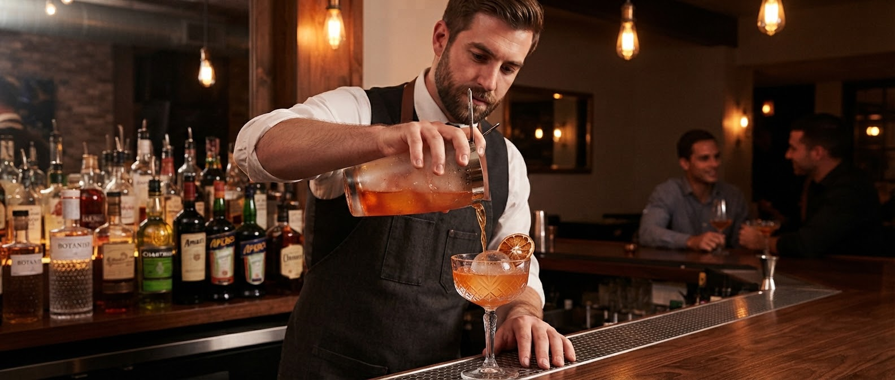
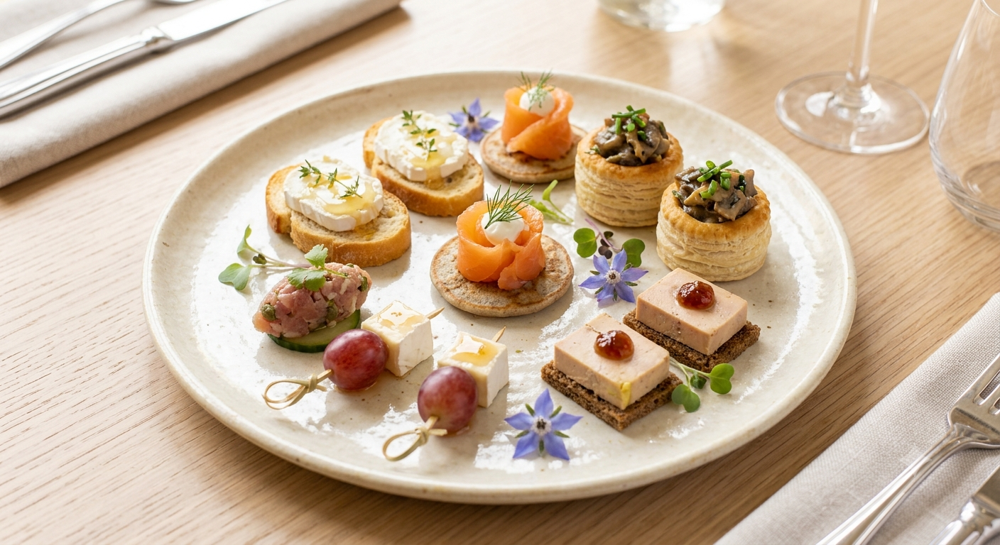
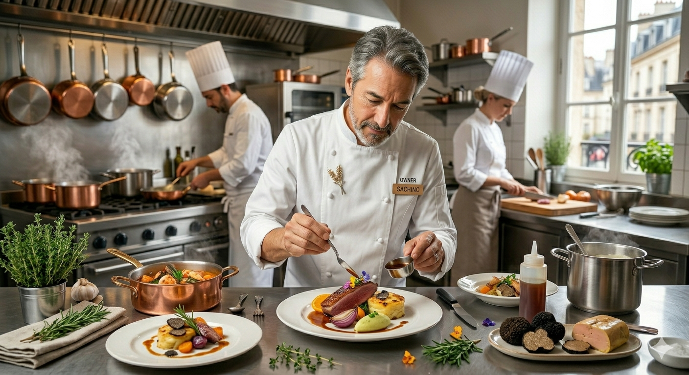

「ワインが好きになった」
その理由が、ここにあります。
「プルピエ」とは、山形ではおなじみの野草「ひょう」のフランス語。地元の食文化への敬意と、世界のナチュラルワインを融合させた開放的なダイニングバーです。
カウンター越しに見えるシェフの繊細な手仕事。グラスを回す音。そのすべてが、一期一会の夜を彩ります。
「まずは、これから。」お客様のほとんどが注文される、プルピエの代名詞的な一皿です。

山形の旬の食材を中心に、シェフ武田悠がその日のインスピレーションで仕上げる創作前菜。ボリュームはもちろん、ワインとのペアリングを第一に考えた味の構成は、何度訪れても新しい発見があります。
Point 01
山形の旬食材
Point 02
丁寧なポーション分け
Point 03
ワインが進む味付け
Point 04
一期一会の構成
「山形に行ったら必ず訪問するお店です。ボトル価格も良心的でホスピタリティが素晴らしい。」
— 国内外のワイン愛好家様
「店員さんの粋な計らいが心地いい。おまかせで頼めば料理に合うワインを提供してくれます。」
— ワインを好きになった女性のお客様

店主・佐藤洋一郎の洗練されたサービスと、地元山形出身のシェフ・武田悠の創造力。かつて共に働いた二人が、令和の幕開けと共に作り上げたのが「プルピエ」です。
大切にしているのは、人との縁。農家さんから届く旬の野菜、醸造家の情熱が詰まったワイン。それらをお客様へ「最高の状態」で届ける。それが私たちの使命です。
プルピエの発信が、もっとわかりやすく快適に。
「今日どんなメニューがあるの？」「どんなワインが届いたの？」
皆様のお声にお応えし、SNSやWEBでの情報発信をリニューアル準備中です。
Instagramプロフィール上に最新コース、気まぐれメニュー、自然派ワインの情報を「固定・ハイライト化」。初めての方でも迷わず情報に辿り着けます。
「重め・軽め」「オレンジワイン」など、今の気分に合わせたおすすめワインや、シェフ厳選の本日のおすすめ料理をスマホで閲覧できる機能。
ご予約はお電話にて承っております
023-664-0742